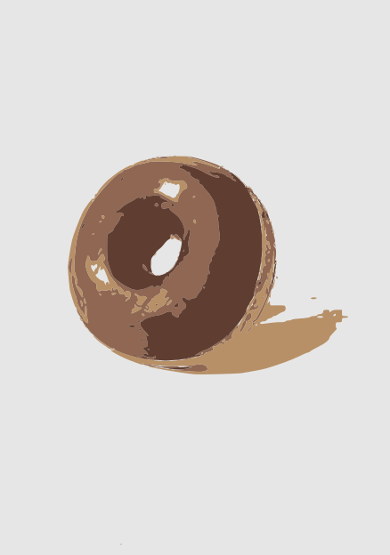

Dona
La dona es un pan dulce esponjoso y redondo, con un agujero en el centro, perfecta para satisfacer antojos de algo dulce. Con una masa ligera y suave, se fríe hasta obtener una textura ligeramente crujiente en el exterior. Las donas pueden servirse glaseadas, cubiertas de azúcar o decoradas con chocolate, chispas o diferentes toppings. Son un clásico para acompañar con café, leche o una bebida caliente, y ofrecen una explosión de dulzura en cada mordida.
$ 15.00
